Scoring
M2 D3S/EGR 2026-2027
1 Outline
1.1 Outline
Course logistics
Scoring
(Warm Up) Farm holding case study
2 Course logistics
2.1 Course logistics
2.1.1 Logistics/Prerequisites
Material available/uploaded at https://github.com/louis-olive/Scoring and partially on Moodle
Email: xxx@gmail.com / xxx@ut-capitole.fr (copy both with [TSE - SCORING] as object)
Personal laptop or university desktop / Running RStudio using Quarto or R Markdown for reports
Basic knowledge of math, statistics / Good command of R (if not you’ll have to learn it throughout the course)
2.2 Course logistics
2.2.1 Agenda
Part 1 (9h): Methods
Mon 14 Sep / Wed 16 Sep / Mon 21 Sep / Wed 23 Sep / Mon 28 Sep / Wed 30 Sep
Part 2 (15h): Case study / project by group of students
Mon 5 Oct / Wed 7 Oct / Mon 12 Oct / Wed 14 Oct / Mon 26 Oct(*) / Wed 28 Oct / Mon 2 Nov / Mon 11 Nov / Mon 16 Nov / Mon 23 Nov / Mon 30 Nov
Throughout the course, the emphasis is put on numerical examples with a hands on / code from scratch approach.
Codes are given in R.
2.3 Course logistics
2.3.1 Grading
Part 1 (5 Oct: ~1.5 hour in-class exam / additional take-home due 18 Oct):
In-class: pen/paper exercises (covering lesson 1. Scoring, lesson 2. Logistic regression, 20%) Take-home: analysis on a real data set including data exploration and applications from the course (report with text + R code, 20%).
Part 2 (25 Oct group composition / 30 Nov: in-class presentation of your project progress, should be almost finished / final report due date: TBD but 20 Dec):
Case study / project per group of students (in-class presentation + report, 60%).
2.4 Course logistics
2.4.1 Agenda - Part 1 (9h): Methods
Statistical learning goals and vocabulary are defined in the context of scoring and classification (10 Sep).
Introduction and study of two workhorses:
Logistic Regression: model fit, inference, selection, penalization (16/24 Sep);
Decision Trees for Classification / (Gradient) Boosting (1/6 Oct).
2.5 Course logistics
2.5.1 Agenda - Part 2 (15h): Case study / project by group
Credit risk is one of the various application of scoring.
Case study using a real life data set, you will be given a set of tasks to perform in group:
Defining the problem / Building the data set [Getting/Cleansing/Enriching Data] / Exploration / Baseline model / Model evaluation pipeline
Implementing Logistic Regression and Tree based methods
“Expert” approach: Implementing ideas from academic literature on credit risk (involving in particular feature engineering)
“Off the shelf” approach: lasso for variable selection, gradient boosting
(Optionnal/Time permitting) more advanced topics: dealing with data imbalance, model calibration, interpretable ML (SHAP/PDP), experiments with Tabular foundation models
A final presentation (group/one-to-one short meeting sketching the highlights your project, 30 Nov). The writing of a final report implementing/documenting your analysis (due date, TBD before 20 Dec).
2.6 Course logistics
2.6.1 Material
Logistic regression/Scoring:
Hosmer D.W., Lemeshow S. and Sturdivant R.X. (2013). Applied Logistic Regression, Wiley.
Cornillon P.A., Matzner-Løber E., Rouvière L. (2019). Régression avec R, Springer (in French). I borrow a lot from this one.
Statistical Learning/Decision Trees/Boosting:
Hastie T., Tibshirani R. and Friedman. J. (2009). The Elements of Statistical Learning: Data Mining, Inference and Prediction, Springer. available here
Lindholm, A. and Wahlström, N., Lindsten, F. and Schön, T. (2022). Machine Learning - A First Course for Engineers and Scientists, Cambridge University Press. latest draft available here
Murphy, K. P. (2022). Probabilistic Machine Learning: An introduction, MIT Press. available here or here
3 Scoring
3.1 Scoring
3.1.1 Supervised learning - a reminder
This an informal and very rapid overview of Statistical Learning, where we introduce concepts and definitions.
For a rigorous introduction see for example the dedicated lesson from Sébastien Gadat - M1 course on Mathematical Statistics or the book by Francis Bach - Learning Theory from First Principles.
3.2 Scoring
3.2.1 Supervised learning - Inputs-Outputs
We follow here the terminology of Hastie et al. (2009).
The problem: we are given a data set where some variables, denoted as inputs1, have some influence on one or more output(s)2.
We will denote inputs by the symbol \(X\) having values in \(\mathrm{X}\) (to explicit things we will consider \(\mathrm X\) is \(\mathbb R^p\)).
If \(X\) is a vector, its components can be accessed by subscripts \(X_j\), \(j = 1, . . . , p\).
Outputs will be denoted by \(Y\) having value in \(\mathrm Y\).
3.3 Scoring
3.3.1 Supervised learning - Framework
Outputs are denoted by \(Y\) having value in \(\mathrm Y\):
When \(\mathrm Y\) is \(\mathbb R\), it is a regression problem;
When \(\mathrm Y\) is a discrete set, it is a classification problem (for example \(\mathrm Y\) is \(\{0,1\}\) for binary classification). In this course we will restrict to the case of binary classification.
We need data to construct predictions or classifications. We suppose we have available a set of observed data:
\((x_i, y_i) \in \mathrm X \times \mathrm Y\) , \(i = 1, \cdots ,n\), known as the learning or training set, with which to construct our prediction.
We assume \((x_i, y_i) \in \mathrm X \times \mathrm Y\) are generated i.i.d. from \(\mathbf P_{\mathrm X \times \mathrm Y}\) where we denote \(\mathbf P_{\mathrm X \times \mathrm Y}\), the data generating distribution (or underlying probability distribution or joint law) which is unknown.
The main goal of supervised learning will be to predict unobserved outputs \(y\) given unobserved inputs \(x\) using the learning set.
Such new or unobserved data is referred as the testing set.
3.4 Scoring
3.4.1 Supervised learning - Loss
To achieve that goal we try to find a “best” or optimal classifier (or prediction function in general):
\[ f: \mathrm X \to \mathrm Y \]
We first must define some criterion to assess the classifier performance (what is optimal?).
For that purpose we consider a loss function \(\ell: \mathrm Y \times \mathrm Y \to \mathbb R^+\):
\[ \left\{ \begin{array}{ll} \ell(y,z) > 0 & \mbox{if } y \neq z\cr \ell(y,z) = 0 & \mbox{if } y = z\cr \end{array} \right. \]
\(\ell(y,f(x))\) is the loss or cost of predicting \(f(x)\) while the true output is \(y\).
In the context of binary classification a natural selection for loss is the 0-1 loss:
\[ \ell(y,z)=\mathbf 1_{y \neq z} \]
We will see later in the course that other losses are used.
3.5 Scoring
3.5.1 Supervised learning - Risk
We then define the expected risk of a prediction function \(f\) given the loss \(\ell\) as:
\[ \mathrm R(f) = \mathbb{E}[\ell(Y,f(X))] \] In the context of binary classification \(Y \in \{0,1\}\) and 0-1 loss, we have:
\[ \mathrm R(f) = \mathbb{P}[Y\neq f(X))] \]
Given a data set \((x_i, y_i) \in \mathrm X \times \mathrm Y\), we also define the empirical risk of a classifier \(f\) as:
\[ \hat{\mathrm R}(f) = \frac{1}{n} \sum_i \ell(y_i,f(x_i)) \]
3.6 Scoring
3.6.1 Supervised learning - Bayes classifier
We now define the Bayes(ian) classifier3 \(f^*: \mathrm X \to \mathrm Y\) as a function that achieves the minimal expected risk among all possible functions:
\[ \underset{f}{\operatorname{argmin}}\mathrm R(f) \]
The Bayes classifier depends on \(\ell\) and \(\mathbf P_{\mathrm X \times \mathrm Y}\) which is generally unknown (otherwise the job would be easy).
The Bayes classifier for the 0-1 loss is:
\[ f^*(x)=\left\{ \begin{array}{ll} 1 & \mbox{if } \eta(x)\geq \frac{1}{2}\cr 0 & \mbox{otherwise}\cr \end{array} \right. \]
where:
\[ \eta(x)=\mathbb{P}[Y=1|X=x)] = \mathbb{E}[Y=1|X=x)] \]
\(\eta(x)\) is called the regression function.
3.7 Scoring
3.7.1 Supervised learning - Theory vs practice
In practice \(\mathbf P_{\mathrm X \times \mathrm Y}\) is unknown. What we have is the learning set. The Bayes classifier minimizes the expected risk but is not a function of the learning set. What to do? Conceptually two approaches are used4:
the “probabilistic” approach: we estimate the regression function \(\eta(x)\) and use/plug this estimate “inside” the Bayes classifier (Plugin); within this approach mainly two sub-approaches:
the “discriminative” approach: we directly model or make an assumption on \(\eta(X)=\mathbf P_{\mathrm Y | \mathrm X}\) and estimate it; for example we can make the assumption that \(\eta(x)\) is a function of a particular form.
the “generative” approach: we model the conditional distribution \(\mathbf P_{\mathrm X | \mathrm Y}\) and use Bayes formula to get: \(\eta(X)=\frac{\mathbb{P}[X|Y=1)]\mathbb{P}[Y=1)]}{\mathbb{P}[X]}=\frac{\mathbb{P}[X|Y=1)]\mathbb{P}[Y=1)]}{\mathbb{P}[X|Y=1)]\mathbb{P}[Y=1)]+\mathbb{P}[X|Y=0)]\mathbb{P}[Y=0)]}\)
the optimization or “machine learning” approach: finding \(f\) minimizing the empirical risk; optimization algorithm or heuristics are used to estimate \(f\); the 0-1 loss is not convex so usually it is replaced by a convex surrogate loss or upper bound; usually re-sampling methods are used to compute empirical risk (\(f\) is trained on a training set and empirical risk evaluated on the testing set, \(f\) is chosen to minimize empirical risk).
3.8 Scoring
3.8.1 Toy example - the Mixture data
To illustrate what we have seen we use the Mixture data set described in Hastie et al. (2009, pp. 12–16).
The data set is generated as follows (p. 16):
First the authors generate 10 “means” \(m_k\) in \(\mathbb R^2\) from a bivariate Gaussian distribution \(\mathcal{N}((1,0),I)\) and label this class BLUE.
Similarly, 10 more are drawn from \(\mathcal{N}((0,1),I)\) and labeled ORANGE.
Then for each class authors generate 100 observations as follows: for each observation, \(m_k\) is picked at random with probability \(\frac{1}{10}\) and used to generate a \(\mathcal{N}(m_k,I/5)\), thus leading to a mixture of Gaussian clusters for each class. They generate similarly an additional data set of 5k observations per class for testing purposes.
The task is to create a classifier that, based on the coordinates \(x_1\) and \(x_2\), determines whether the point is ORANGE or BLUE.
3.9 Scoring
3.9.1 Toy example - the Mixture data
First we load the data set and plot the “means”:
Code
# Simulated mixture (ORANGE/BLUE) from ESLII/ISLR
load(file='../data/mixture.example.RData')
x1_means <- mixture.example$means[,1]
x2_means <- mixture.example$means[,2]
mixture_means <- tibble(x1_means, x2_means) %>%
rowid_to_column() %>%
mutate(Y = if_else(rowid <= 10, "BLUE", "ORANGE"))
ggplot(mixture_means) +
geom_point(aes(x = x1_means, y = x2_means, col = Y), size = 3, show.legend = FALSE) +
scale_colour_manual(values = c("dodgerblue", "orange")) +
theme_void()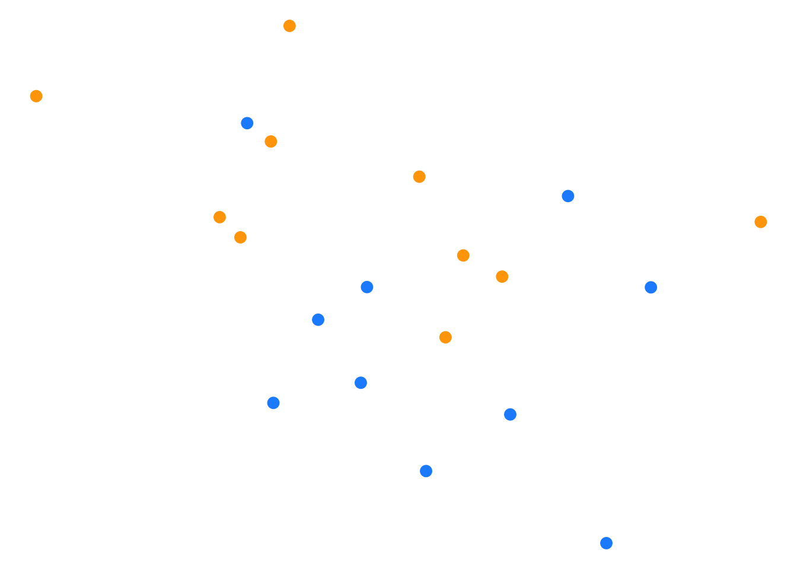
Code
# saveRDS(mixture_means, "../data/mixture_means.rds")3.10 Scoring
3.10.1 Toy example - the Mixture data
Then the training set together with the “means”:
Code
Y = mixture.example$y
x1 = mixture.example$x[,1]
x2 = mixture.example$x[,2]
data_mixture_example <- tibble(Y, x1, x2) %>% mutate(Y = as_factor(Y))
ggplot(data_mixture_example) +
geom_point(aes(x = x1, y = x2, col = Y), shape = "o", size = 4, stroke = 2, show.legend = FALSE) +
geom_point(data = mixture_means, aes(x = x1_means, y = x2_means, col =Y), size = 3, show.legend = FALSE) +
scale_colour_manual(values = c("dodgerblue", "orange", "dodgerblue", "orange")) +
theme_void()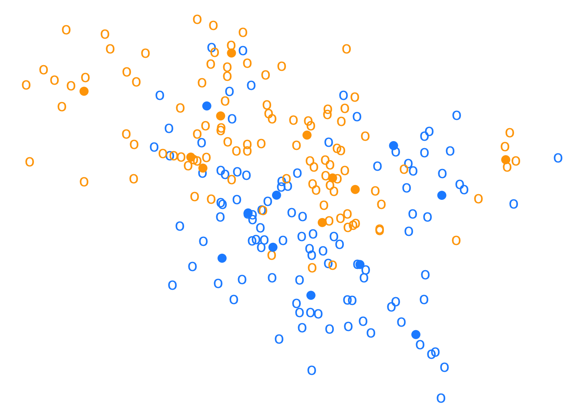
Code
#saveRDS(data_mixture_example, "data_mixture_example.rds")3.11 Scoring
3.11.1 Toy example - the Mixture data
Knowing the generative distribution, we generate a testing set of size 10k (half BLUE, half ORANGE).
Code
# generate new sampling
set.seed(1987)
N <- 10000
draw <- sample(1:10, size=N, replace=TRUE)
x1_blue <- rnorm(N/2) * 1/sqrt(5) + mixture_means[draw[1:(N/2)],2]
x2_blue <- rnorm(N/2) * 1/sqrt(5) + mixture_means[draw[1:(N/2)],3]
x1_orange <- rnorm(N/2) * 1/sqrt(5) + mixture_means[10 + draw[(N/2+1):N],2]
x2_orange <- rnorm(N/2) * 1/sqrt(5) + mixture_means[10 + draw[(N/2+1):N],3]
new_mixture <- rbind(cbind(x1_blue, x2_blue, Y="BLUE"), cbind(x1_orange, x2_orange, Y="ORANGE")) %>%
as_tibble() %>%
rename(x1=x1_means, x2=x2_means)
# head(new_mixture)We plot the first 250 new observations of each class from the generated testing set:
Code
ggplot(new_mixture[c(1:250,5001:5251),]) +
geom_point(aes(x = x1, y = x2, col = Y), shape = "o", size = 4, stroke = 2, show.legend = FALSE) +
geom_point(data = mixture_means, aes(x = x1_means, y = x2_means, col =Y), size = 3, show.legend = FALSE) +
scale_colour_manual(values = c("dodgerblue", "orange", "dodgerblue", "orange")) +
theme_void()
Code
# saveRDS(new_mixture, "../data/new_mixture.rds")
# new_mixture <- readRDS("../data/new_mixture.rds")3.12 Scoring
3.12.1 Toy example - the Mixture data
Knowing the generating distribution we can derive the Bayes classifier (exercise 2.2 (Hastie et al., 2009)).
We plot the boundary decision in grey:
Code
# fine grid for predictions/decision boundaries
grid <- expand.grid(x1 = seq(-2.6, 4.2, .01), x2 = seq(-2.0, 2.9, .01)) %>% as_tibble()
# coarse grid for mimicking ESL figures (little dots)
grid_background <- expand.grid(x1 = seq(-2.6, 4.2, .05), x2 = seq(-2.0, 2.9, .05)) %>% as_tibble()
# Prediction function used to classify areas on the grid and imply the decision boundary
# explicit expression for the Bayes decision boundary
predict_oracle <- function(x1, x2){
obj <- 0
for(i in 1:10){
obj <- obj +
exp(-5/2*((x1-x1_means[i])**2+(x2-x2_means[i])**2)) -
exp(-5/2*((x1-x1_means[i+10])**2+(x2-x2_means[i+10])**2))
}
1 * (obj < 0)
}
predict_oracle_V <- Vectorize(predict_oracle)
grid <- grid %>% mutate(predict_oracle = predict_oracle_V(x1, x2))
grid_background <- grid_background %>% mutate(predict_oracle = predict_oracle_V(x1, x2))
ggplot(grid) +
geom_contour(aes(x = x1, y = x2, z = predict_oracle),
breaks = 0.5, col = 'darkgrey') +
geom_point(data = data_mixture_example, aes(x = x1, y = x2, col = Y),
shape = "o", size = 4, stroke = 2, show.legend = FALSE) +
geom_point(data = grid_background,
aes(x = x1, y = x2, col = as.factor(predict_oracle)),
shape = 20, size = .05, alpha = .5, show.legend = FALSE) +
scale_colour_manual(values = c("dodgerblue", "orange")) +
theme_void()
3.13 Scoring
3.13.1 Toy example - the Mixture data
We estimate Bayes risk on the testing data set simulated before (10k BLUE/ORANGE dots) using the data generating process \(\mathbf P_{\mathrm X \times \mathrm Y}\).
Code
bayes_error_rate <- new_mixture %>%
mutate(Y = if_else(Y=="BLUE", 0, 1),
predict_oracle = predict_oracle_V(x1, x2),
l01 = if_else(Y==predict_oracle, 0, 1))
bayes_test_risk <- bayes_error_rate %>%
summarise(l01 = mean(l01)) %>%
pull(l01)
bayes_error_rate_train <- data_mixture_example %>%
mutate(Y = if_else(Y=="0", 0, 1),
predict_oracle = predict_oracle_V(x1, x2),
l01 = if_else(Y==predict_oracle, 0, 1))
bayes_train_risk <- bayes_error_rate_train %>%
summarise(l01 = mean(l01)) %>%
pull(l01)We get a value of 0.213 for the “estimated” Bayes risk, which is in line with (Hastie et al., 2009, Figure 13.4), see below:
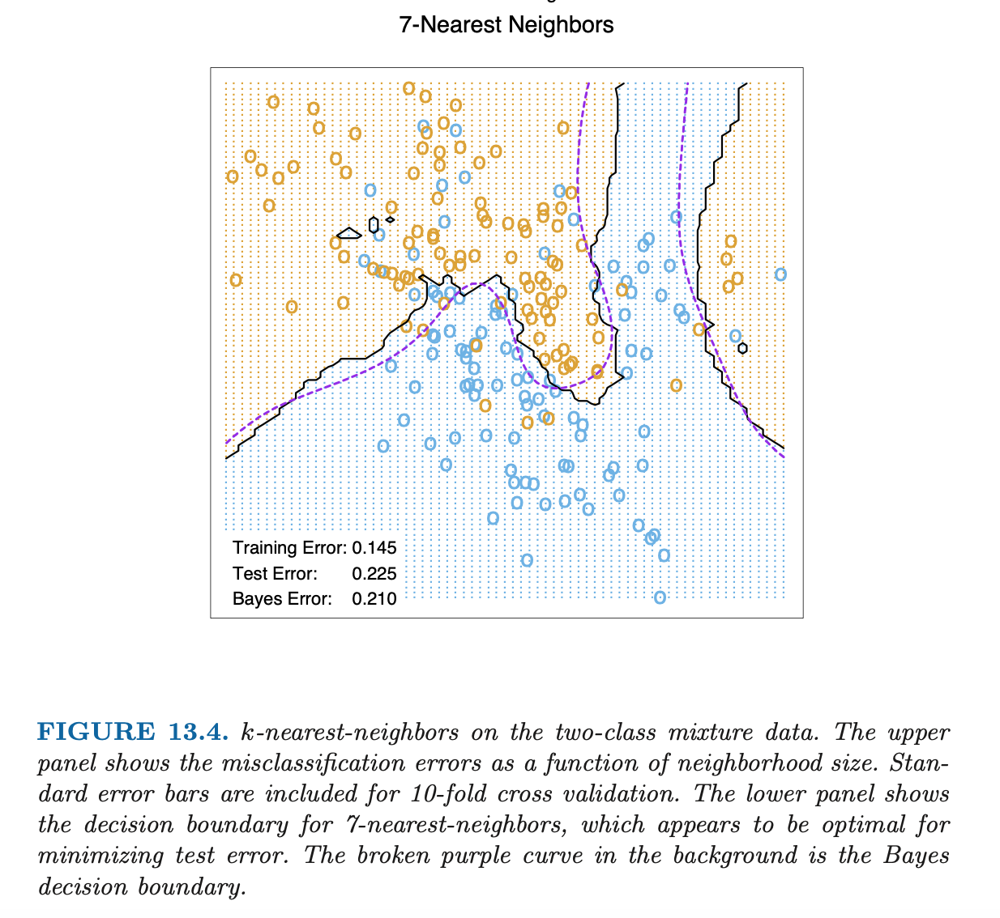
3.14 Scoring
3.14.1 Toy example - A brief tour
We give a brief tour showing the decision boundary of common classifiers for the Mixture data set.
3.15 Scoring
3.15.1 Toy example - Logistic Regression classifier
We plot below the linear decision boundary given by a Logistic Regression classifier vs Bayes classifier, we only display the training set:
Code
# fine grid for predictions/decision boundaries
grid <- expand.grid(x1 = seq(-2.6, 4.2, .01), x2 = seq(-2.0, 2.9, .01)) %>% as_tibble()
# coarse grid for mimicking ESL figures (little dots)
grid_background <- expand.grid(x1 = seq(-2.6, 4.2, .05), x2 = seq(-2.0, 2.9, .05)) %>% as_tibble()
mixture_example_logit <- glm(Y~., data = data_mixture_example, family = "binomial")
grid <- broom::augment(mixture_example_logit,
data = data_mixture_example,
newdata = grid,
type.predict = "response", type.residuals = "deviance") %>%
mutate(predict_oracle = predict_oracle_V(x1, x2))
grid_background <- broom::augment(mixture_example_logit, data = data_mixture_example,
newdata = grid_background, type.predict = "response", type.residuals = "deviance") %>%
mutate(predict_glm = 1*(.fitted >= 0.5))
coeffs <- mixture_example_logit$coefficients
glm_boundary <- function(x1){
-(coeffs[2] * x1 + coeffs[1]) / coeffs[3]
}
glm_boundary_V <- Vectorize(glm_boundary)
ggplot(grid) +
geom_contour(aes(x = x1, y = x2, z = predict_oracle),
breaks = 0.5, col = 'purple') +
geom_line(aes(x = x1, y = glm_boundary(x1)),col = 'darkgrey') +
geom_point(data = data_mixture_example, aes(x = x1, y = x2, col = Y),
shape = "o", size = 4, stroke = 2, show.legend = FALSE) +
geom_point(data = grid_background,
aes(x = x1, y = x2, col = as.factor(predict_glm)),
shape = 20, size = .05, alpha = .5, show.legend = FALSE) +
scale_colour_manual(values = c("dodgerblue", "orange")) +
theme_void()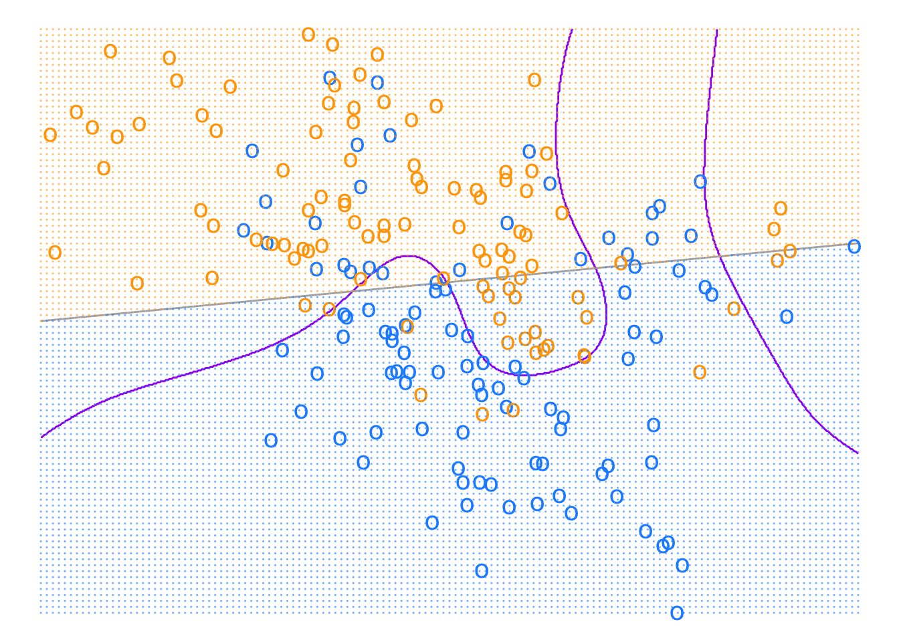
Code
logit_error_rate <- broom::augment(mixture_example_logit,
data = data_mixture_example,
newdata = new_mixture,
type.predict = "response",
type.residuals = "deviance") %>%
mutate(Y = if_else(Y == "BLUE", 0, 1),
predict_glm = 1*(.fitted >= 0.5),
l01 = if_else(Y==predict_glm, 0, 1))
logit_risk <- logit_error_rate %>% summarise(l01 = mean(l01)) %>% pull(l01)The empirical risk on testing set is 0.291.
3.16 Scoring
3.16.1 Toy example - Logistic Regression classifier - binning
It is usual, for example in the context of credit scoring or banking, to discretize or categorize numerical variables (a.k.a binning). We use a simple decile binning on \(x_1\) and \(x_2\):
Code
# fine grid for predictions/decision boundaries
grid <- expand.grid(x1 = seq(-2.6, 4.2, .01), x2 = seq(-2.0, 2.9, .01)) %>% as_tibble()
# coarse grid for mimicking ESL figures (little dots)
grid_background <- expand.grid(x1 = seq(-2.6, 4.2, .05), x2 = seq(-2.0, 2.9, .05)) %>% as_tibble()
breaks_x1 <- c(quantile(data_mixture_example$x1, probs = seq(0, 1, by = 1/10), na.rm = T))
breaks_x1[1] <- -1e8
breaks_x1[length(breaks_x1)] <- 1e8
breaks_x2 <- c(quantile(data_mixture_example$x2, probs = seq(0, 1, by = 1/10), na.rm = T))
breaks_x2[1] <- -1e8
breaks_x2[length(breaks_x2)] <- 1e8
data_binned <- data_mixture_example %>%
mutate(x1_bin = cut(x1, breaks = breaks_x1,
right = FALSE,
dig.lab = 1,
ordered_result = TRUE),
x2_bin = cut(x2, breaks = breaks_x2,
right = FALSE,
dig.lab = 1,
ordered_result = TRUE))
grid <- grid %>%
mutate(x1_bin = cut(x1, breaks = breaks_x1,
right = FALSE,
dig.lab = 1,
ordered_result = TRUE),
x2_bin = cut(x2, breaks = breaks_x2,
right = FALSE,
dig.lab = 1,
ordered_result = TRUE))
grid_background <- grid_background %>%
mutate(x1_bin = cut(x1, breaks = breaks_x1,
right = FALSE,
dig.lab = 1,
ordered_result = TRUE),
x2_bin = cut(x2, breaks = breaks_x2,
right = FALSE,
dig.lab = 1,
ordered_result = TRUE))
# from https://search.r-project.org/R/refmans/base/html/cut.html
# x1_labs <- levels(data_binned$x1_bin)
# x2_labs <- levels(data_binned$x2_bin)
#(,]
# cbind(lower = as.numeric( sub("\\((.+),.*", "\\1", x1_labs) ),
# upper = as.numeric( sub("[^,]*,([^]]*)\\]", "\\1", x1_labs) ))
#[,)
# x1_bounds <- bind_cols(lower = as.numeric( sub("\\[(.+),.*", "\\1", x1_labs) ),
# upper = as.numeric( sub("[^,]*,([^\\)]*)(\\)|])", "\\1", x1_labs) ))
mixture_example_glm_binned <- glm(Y ~ x1_bin + x2_bin,
data = data_binned,
family = "binomial")
grid <- broom::augment(mixture_example_glm_binned,
data = data_binned,
newdata = grid,
type.predict = "response",
type.residuals = "deviance") %>%
mutate(predict_glm_binned = 1*(.fitted >= 0.5),
predict_oracle = predict_oracle_V(x1, x2))
grid_background <- broom::augment(mixture_example_glm_binned,
data = data_binned,
newdata = grid_background,
type.predict = "response",
type.residuals = "deviance") %>%
mutate(predict_glm_binned = 1*(.fitted >= 0.5),
predict_oracle = predict_oracle_V(x1, x2))
ggplot(grid) +
geom_contour(aes(x = x1, y = x2, z = predict_oracle),
breaks = 0.5, col = 'purple') +
geom_contour(aes(x = x1, y = x2, z = predict_glm_binned),
breaks = 0.5, col = 'darkgrey') +
geom_point(data = data_mixture_example, aes(x = x1, y = x2, col = Y),
shape = "o", size = 4, stroke = 2, show.legend = FALSE) +
geom_point(data = grid_background,
aes(x = x1, y = x2, col = as.factor(predict_glm_binned)),
shape = 20, size = .05, alpha = .5, show.legend = FALSE) +
scale_colour_manual(values = c("dodgerblue", "orange")) +
theme_void()
Code
new_mixture_binned <- new_mixture %>%
mutate(x1_bin = cut(x1, breaks = breaks_x1,
right = FALSE,
dig.lab = 1,
ordered_result = TRUE),
x2_bin = cut(x2, breaks = breaks_x2,
right = FALSE,
dig.lab = 1,
ordered_result = TRUE))
logit_binned_error_rate <- broom::augment(mixture_example_glm_binned,
data = data_binned,
newdata = new_mixture_binned,
type.predict = "response",
type.residuals = "deviance") %>%
mutate(Y = if_else(Y == "BLUE", 0, 1),
predict_glm = 1*(.fitted >= 0.5),
l01 = if_else(Y==predict_glm, 0, 1))
logit_binned_risk <- logit_binned_error_rate %>%
summarise(l01 = mean(l01)) %>%
pull(l01)The empirical risk on testing set is 0.265.
3.17 Scoring
3.17.1 Toy example - Logistic Regression classifier - splines
A popular method to move beyond linearity is to transform variables, for example using splines (Hastie et al., 2009, p. 5.6 Nonparametric Logistic Regression, p161-164).
Code
library(splines)
## fit additive natural cubic spline model
# Additive Natural Cubic Splines - 4 df each (Fig 5.11 p164)
# fine grid for predictions/decision boundaries
grid <- expand.grid(x1 = seq(-2.6, 4.2, .01), x2 = seq(-2.0, 2.9, .01)) %>% as_tibble()
# coarse grid for mimicking ESL figures (little dots)
grid_background <- expand.grid(x1 = seq(-2.6, 4.2, .05), x2 = seq(-2.0, 2.9, .05)) %>% as_tibble()
mixture_example_glm_splines_add <- glm(Y ~ splines::ns(x1, df=4) +
splines::ns(x2, df=4),
data = data_mixture_example,
family = "binomial")
grid <- broom::augment(mixture_example_glm_splines_add,
data = data_mixture_example,
newdata = grid,
type.predict = "response",
type.residuals = "deviance") %>%
mutate(predict_gam = 1*(.fitted >= 0.5),
predict_oracle = predict_oracle_V(x1, x2))
grid_background <- broom::augment(mixture_example_glm_splines_add,
data = data_mixture_example,
newdata = grid_background,
type.predict = "response",
type.residuals = "deviance") %>%
mutate(predict_gam = 1*(.fitted >= 0.5))
ggplot(grid) +
geom_contour(aes(x = x1, y = x2, z = predict_oracle),
breaks = 0.5, col = 'purple') +
geom_contour(aes(x = x1, y = x2, z = predict_gam),
breaks = 0.5, col = 'darkgrey') +
geom_point(data = data_mixture_example, aes(x = x1, y = x2, col = Y),
shape = "o", size = 4, stroke = 2, show.legend = FALSE) +
geom_point(data = grid_background,
aes(x = x1, y = x2, col = as.factor(predict_gam)),
shape = 20, size = .05, alpha = .5, show.legend = FALSE) +
scale_colour_manual(values = c("dodgerblue", "orange")) +
theme_void()
Code
logit_splines_add_error_rate <- broom::augment(mixture_example_glm_splines_add,
data = data_mixture_example,
newdata = new_mixture,
type.predict = "response",
type.residuals = "deviance") %>%
mutate(Y = if_else(Y == "BLUE", 0, 1),
predict_glm = 1*(.fitted >= 0.5),
l01 = if_else(Y==predict_glm, 0, 1))
logit_splines_add_risk <- logit_splines_add_error_rate %>%
summarise(l01 = mean(l01)) %>%
pull(l01)The empirical risk on testing set is 0.29.
3.18 Scoring
3.18.1 Toy example - k-Nearest Neighbors Algorithm - \(k = 15\)
k-NN is a non-parametric algorithm. Given a new observation, it finds in the training set the k closest points (given a certain distance) and predicts using a majority vote. Below the boundary decision for \(k=15\):
Code
library(class)
k <- 15
# fine grid for predictions
grid <- expand.grid(x1 = seq(-2.6, 4.2, .01), x2 = seq(-2.0, 2.9, .01)) %>% as_tibble()
# coarse grid for mimicking ESL figures
grid_background <- expand.grid(x1 = seq(-2.6, 4.2, .05), x2 = seq(-2.0, 2.9, .05)) %>% as_tibble()
# Normalize using boundaries of training sample
normalize <- FALSE # TRUE (pred error 0.259) / FALSE (pred error 0.2498)
if (normalize) {
min1 <- min(data_mixture_example$x1)
min2 <- min(data_mixture_example$x2)
max1 <- max(data_mixture_example$x1)
max2 <- max(data_mixture_example$x2)
train_mixture <- data_mixture_example %>%
mutate(x1 = (x1 - min1) / (max1 - min1),
x2 = (x2 - min2) / (max2 - min2)) %>%
select(x1, x2)
test_grid_mixture <- grid %>%
mutate(x1 = (x1 - min1) / (max1 - min1),
x2 = (x2 - min2) / (max2 - min2)) %>%
select(x1, x2)
test_new_mixture <- new_mixture %>%
mutate(x1 = (x1 - min1) / (max1 - min1),
x2 = (x2 - min2) / (max2 - min2)) %>%
select(x1, x2)
} else {
train_mixture <- data_mixture_example %>%
select(x1,x2)
# For boundary decision (fine grid)
test_grid_mixture <- grid %>%
select(x1,x2)
# For background (coarse grid)
background_grid_mixture <- grid_background %>%
select(x1,x2)
test_new_mixture <- new_mixture %>%
select(x1,x2)
}
mixture_example_knn <- knn(train_mixture, #train X
test_new_mixture, # test X
data_mixture_example %>% pull(Y), # train Y
k)
table_test <- table(mixture_example_knn,
new_mixture %>% # test Y
mutate(Y = as_factor(if_else(Y == "BLUE", 0, 1))) %>%
pull(Y))
mixture_example_knn <- knn(train_mixture, #train X
train_mixture, # test X = train X
data_mixture_example %>% pull(Y), # train Y
k)
table_train <- table(mixture_example_knn,
data_mixture_example %>% pull(Y))
mixture_example_knn <- knn(train_mixture, #train X
test_grid_mixture, # test X = fine grid for boundary plot
data_mixture_example %>% pull(Y), # train Y
k)
mixture_example_knn_bg <- knn(train_mixture, #train X
background_grid_mixture, # test X = "dotted" grid for plot
data_mixture_example %>% pull(Y), # train Y
k)
grid <- bind_cols(grid, predict_knn = mixture_example_knn) %>%
mutate(predict_knn = if_else(mixture_example_knn=='0', 0, 1),
predict_oracle = predict_oracle_V(x1, x2))
grid_background <- bind_cols(grid_background, predict_knn = mixture_example_knn_bg) %>%
mutate(predict_knn = if_else(mixture_example_knn_bg=='0', 0, 1))
ggplot(grid) +
geom_contour(aes(x = x1, y = x2, z = predict_oracle),
breaks = 0.5, col = 'purple') +
geom_contour(aes(x = x1, y = x2, z = predict_knn),
breaks = 0.5, col = 'darkgrey') +
geom_point(data = data_mixture_example, aes(x = x1, y = x2, col = Y),
shape = "o", size = 4, stroke = 2, show.legend = FALSE) +
geom_point(data = grid_background, aes(x = x1, y = x2, col = as.factor(predict_knn)),
shape = 20, size = .05, alpha = .5, show.legend = FALSE) +
scale_colour_manual(values = c("dodgerblue", "orange")) +
theme_void()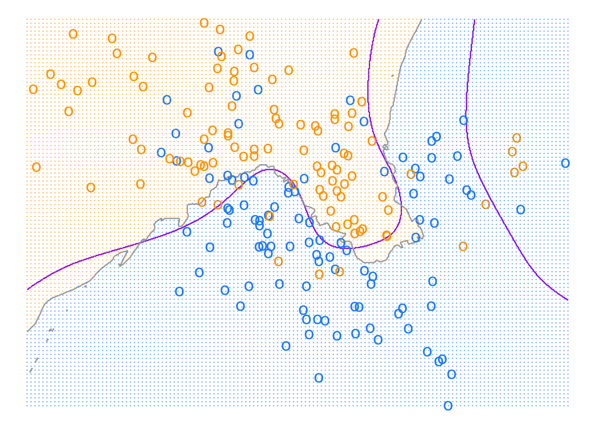
Code
knn_error_rate <- (table_test[[2]] + table_test[[3]]) /
(table_test[[1]] + table_test[[2]] + table_test[[3]] + table_test[[4]])The empirical risk on testing set is 0.25.
3.19 Scoring
3.19.1 Toy example - k-Nearest Neighbors Algorithm - \(k = 7\)
We show below the boundary decision for \(k=7\):
Code
library(class)
k <- 7
# fine grid for predictions
grid <- expand.grid(x1 = seq(-2.6, 4.2, .01), x2 = seq(-2.0, 2.9, .01)) %>% as_tibble()
# coarse grid for mimicking ESL figures
grid_background <- expand.grid(x1 = seq(-2.6, 4.2, .05), x2 = seq(-2.0, 2.9, .05)) %>% as_tibble()
# Normalize using boundaries of training sample
normalize <- FALSE # TRUE (pred error 0.259) / FALSE (pred error 0.2498)
if (normalize) {
min1 <- min(data_mixture_example$x1)
min2 <- min(data_mixture_example$x2)
max1 <- max(data_mixture_example$x1)
max2 <- max(data_mixture_example$x2)
train_mixture <- data_mixture_example %>%
mutate(x1 = (x1 - min1) / (max1 - min1),
x2 = (x2 - min2) / (max2 - min2)) %>%
select(x1, x2)
test_grid_mixture <- grid %>%
mutate(x1 = (x1 - min1) / (max1 - min1),
x2 = (x2 - min2) / (max2 - min2)) %>%
select(x1, x2)
test_new_mixture <- new_mixture %>%
mutate(x1 = (x1 - min1) / (max1 - min1),
x2 = (x2 - min2) / (max2 - min2)) %>%
select(x1, x2)
} else {
train_mixture <- data_mixture_example %>%
select(x1,x2)
# For boundary decision (fine grid)
test_grid_mixture <- grid %>%
select(x1,x2)
# For background (coarse grid)
background_grid_mixture <- grid_background %>%
select(x1,x2)
test_new_mixture <- new_mixture %>%
select(x1,x2)
}
mixture_example_knn <- knn(train_mixture, #train X
test_new_mixture, # test X
data_mixture_example %>% pull(Y), # train Y
k)
table_test <- table(mixture_example_knn,
new_mixture %>% # test Y
mutate(Y = as_factor(if_else(Y == "BLUE", 0, 1))) %>%
pull(Y))
mixture_example_knn <- knn(train_mixture, #train X
train_mixture, # test X = train X
data_mixture_example %>% pull(Y), # train Y
k)
table_train <- table(mixture_example_knn,
data_mixture_example %>% pull(Y))
mixture_example_knn <- knn(train_mixture, #train X
test_grid_mixture, # test X = fine grid for boundary plot
data_mixture_example %>% pull(Y), # train Y
k)
mixture_example_knn_bg <- knn(train_mixture, #train X
background_grid_mixture, # test X = "dotted" grid for plot
data_mixture_example %>% pull(Y), # train Y
k)
grid <- bind_cols(grid, predict_knn = mixture_example_knn) %>%
mutate(predict_knn = if_else(mixture_example_knn=='0', 0, 1),
predict_oracle = predict_oracle_V(x1, x2))
grid_background <- bind_cols(grid_background, predict_knn = mixture_example_knn_bg) %>%
mutate(predict_knn = if_else(mixture_example_knn_bg=='0', 0, 1))
ggplot(grid) +
geom_contour(aes(x = x1, y = x2, z = predict_oracle),
breaks = 0.5, col = 'purple') +
geom_contour(aes(x = x1, y = x2, z = predict_knn),
breaks = 0.5, col = 'darkgrey') +
geom_point(data = data_mixture_example, aes(x = x1, y = x2, col = Y),
shape = "o", size = 4, stroke = 2, show.legend = FALSE) +
geom_point(data = grid_background, aes(x = x1, y = x2, col = as.factor(predict_knn)),
shape = 20, size = .05, alpha = .5, show.legend = FALSE) +
scale_colour_manual(values = c("dodgerblue", "orange")) +
theme_void()
Code
knn_error_rate <- (table_test[[2]] + table_test[[3]]) /
(table_test[[1]] + table_test[[2]] + table_test[[3]] + table_test[[4]])The empirical risk on testing set is 0.227.
3.20 Scoring
3.20.1 Toy example - k-Nearest Neighbors Algorithm - \(k = 7\)
To be compared with (Hastie et al., 2009, Figure 13.4):
3.21 Scoring
3.21.1 Toy example - k-Nearest Neighbors Algorithm - varying \(k\)
We vary \(k\) and show the empirical risks on training and testing sets together with Bayes risk:
Code
K = seq(100,1,-1)
misclass_curve <- list()
for (k in K){
knn_test <- knn(train_mixture, #train X
test_new_mixture, # test X
data_mixture_example %>% pull(Y), # train Y
k)
knn_train <- knn(train_mixture, #train X
train_mixture, # test X = train X
data_mixture_example %>% pull(Y), # train Y
k)
table_test <- table(knn_test,
new_mixture %>% # test Y
mutate(Y = as_factor(if_else(Y == "BLUE", 0, 1))) %>%
pull(Y))
test_error <- (table_test[[2]] + table_test[[3]]) /
(table_test[[1]] + table_test[[2]] + table_test[[3]] + table_test[[4]])
table_train <- table(knn_train,
data_mixture_example %>% pull(Y))
train_error <- (table_train[[2]] + table_train[[3]]) /
(table_train[[1]] + table_train[[2]] + table_train[[3]] + table_train[[4]])
misclass_curve[[k]] <- tibble(`k - Number of Nearest Neighbours` = k,
`KNN train` = train_error,
`KNN test` = test_error)
}
misclass_plot <- bind_rows(misclass_curve) %>%
mutate(`Bayes test` = bayes_test_risk,
`Bayes train` = bayes_train_risk) %>%
pivot_longer(-`k - Number of Nearest Neighbours`,
names_to = "Model data",
values_to = "Prediction Error")Code
library(scales)
ggplot(misclass_plot %>% filter(!`Model data`=="Bayes train")) +
geom_line(aes(x = `k - Number of Nearest Neighbours`,
y = `Prediction Error`,
col = as.factor(`Model data`))) +
scale_x_continuous(
trans = scales::compose_trans("log10", "reverse"),
breaks = c(100, 50, 15, 7, 3, 1)) +
scale_colour_manual(values = c("purple", "orange", "dodgerblue")) +
theme_bw() +
labs(col = NULL)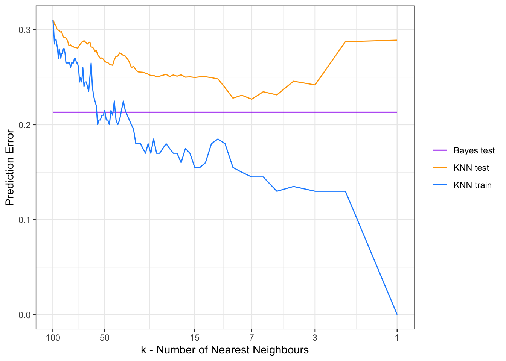
3.22 Scoring
3.22.1 Toy example - k-Nearest Neighbors Algorithm - varying \(k\)
To be compared with (Hastie et al., 2009, Figure 2.4):
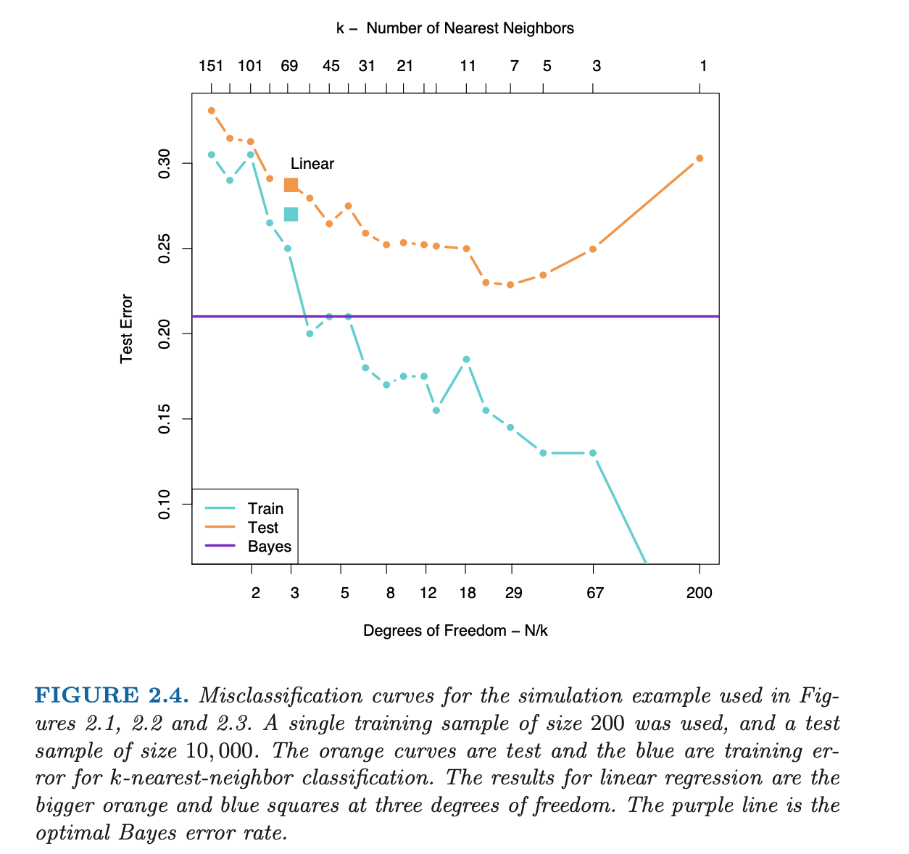
3.23 Scoring
3.23.1 Toy example - Decision Trees
To finish our tour, we show the result of a recursive partition of the plan using Decision Trees techniques:
Code
library(rpart)
library(rpart.plot)
# fine grid for predictions
grid <- expand.grid(x1 = seq(-2.6, 4.2, .01), x2 = seq(-2.0, 2.9, .01)) %>% as_tibble()
# coarse grid for mimicking ESL figures
grid_background <- expand.grid(x1 = seq(-2.6, 4.2, .05), x2 = seq(-2.0, 2.9, .05)) %>% as_tibble()
mixture_example_CART <- rpart(Y~., data = data_mixture_example, method = "class")
grid <- bind_cols(grid,
as_tibble(predict(mixture_example_CART, newdata = grid))) %>%
select(-`0`) %>%
rename(predict_CART = `1`) %>%
mutate(predict_CART = 1*(predict_CART >= 0.5),
predict_oracle = predict_oracle_V(x1, x2))
grid_background <- bind_cols(grid_background,
as_tibble(predict(mixture_example_CART, newdata = grid_background))) %>%
select(-`0`) %>%
rename(predict_CART = `1`) %>%
mutate(predict_CART = 1*(predict_CART >= 0.5),
predict_oracle = predict_oracle_V(x1, x2))
# rpart.plot(mixture_example_CART)
# using nicer low-level function prp to change nodes color / labels etc
mixture_example_CART_plot <- rpart(Y~.,
data = data_mixture_example %>%
mutate(Y = if_else(Y=="0", "BLUE", "ORANGE")),
method = "class")
prp(mixture_example_CART_plot, type = 2, extra = 4, fallen.leaves = TRUE,
box.col = c("dodgerblue", "orange")[mixture_example_CART$frame$yval],
# we indicate both Class 0-1 probabilities and number of observations for each node
node.fun = function(x, labs, digits, varlen) paste(labs, "\n", "B/O: ", x$frame$yval2[,2], " - ", x$frame$yval2[,3]))
3.24 Scoring
3.24.1 Toy example - Decision Trees
We show below the boundary decision for the previously fitted tree:
Code
ggplot(grid) +
geom_contour(aes(x = x1, y = x2, z = predict_oracle),
breaks = 0.5, col = 'purple') +
geom_contour(aes(x = x1, y = x2, z = predict_CART),
breaks = 0.5, col = 'darkgrey') +
geom_point(data = data_mixture_example, aes(x = x1, y = x2, col = Y),
shape = "o", size = 4, stroke = 2, show.legend = FALSE) +
geom_point(data = grid_background,
aes(x = x1, y = x2, col = as.factor(predict_CART)),
shape = 20, size = .05, alpha = .5, show.legend = FALSE) +
scale_colour_manual(values = c("dodgerblue", "orange")) +
theme_void()
Code
cart_error_rate <- bind_cols(new_mixture,
tibble(class = predict(mixture_example_CART,
newdata = new_mixture,
type = "class")),
tibble(prob = predict(mixture_example_CART,
newdata = new_mixture,
type = "prob")[, 2])) %>%
# as_tibble()) %>%
mutate(Y = if_else(Y == "BLUE", 0, 1),
l01 = if_else(Y==class, 0, 1))
cart_risk <- cart_error_rate %>%
summarise(l01 = mean(l01)) %>%
pull(l01)The empirical risk on testing set is 0.247.
3.25 Scoring
3.25.1 If you like boundary decision plots
To play further and make nicer animated 2D decision boundaries for binary classifiers see these two blogs here and here.
Please also note that the scikit-learn Python library implements methods to display decision boundaries for classifiers.
3.26 Scoring
At last we come to the subject of our course!
We remind we are in the context of binary classification.
Often we (and the business) are more interested in estimating the probabilities that \(Y\) belongs to each class.
Quoting Trevor Hastie: “For example, it is more valuable to have an estimate of the probability that an insurance claim is fraudulent, than a classification fraudulent or not.”
3.27 Scoring
3.27.1 Scoring function
As introduced in Cornillon et al. (2019, Chapter 11.6 “Prévision - scoring”):
The aim of Scoring: find a Scoring function or Score \(S: \mathbb R^p \to \mathbb R\) that is “high” in case \(\mathbb{P}[Y=1|X=x)\) is “high” and “low” in case \(\mathbb{P}[Y=0|X=x)\) is “high”.
We say that \(S(x)\) is the score of the observation \(x \in \mathbb R^p\).
The notions of Score and classifier are closely linked. Given a Score \(S\) and a cutoff \(s \in \mathbb R\) we obtain the following classifier:
\[ f_s(x)=\left\{ \begin{array}{ll} 1 & \mbox{if } S(x)\geq s\cr 0 & \mbox{otherwise}\cr \end{array} \right. \]
- The values taken by \(S(x)\) are less important than the way they will order a set of observation \(x_1,...x_n\). For any \(\phi: \mathbb R \to \mathbb R\) bijective and increasing function, we say that the scores \(S\) and \(\phi \circ S\) are equivalent.
3.28 Scoring
3.28.1 First example
We show below a simplified example of a credit scorecard that were typically used by banks to assess the creditworthiness of consumer loans applicants (as shown in (Thomas et al., 2002)):
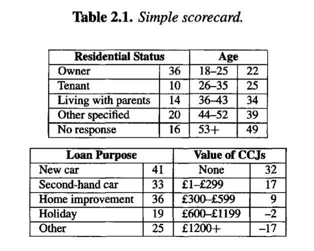
3.29 Scoring
3.29.1 First example
a 35-year-old owner wishing to borrow money for home improvement and that has never had a county court judgement (CCJ) will score \(129 = (36+25+36+32)\),
a 20-year-old living with his parents borrowing for holiday and having more than £1200 of CCJ will score \(38=(22+14+19-17)\).
3.30 Scoring
3.30.1 The regression function, a Scoring function
We defined above, in the context of supervised learning, the regression function \(\eta(x)=\mathbb{P}[Y=1|X=x)]\).
It is a natural candidate for a Scoring function.
The related Bayes classifier uses \(s=\frac{1}{2}\) as cutoff.
As we have just seen in the last sections, \(\eta(x)\) is unknown and we will have to approximate or estimate this regression function using the training set.
3.31 Scoring
3.31.1 Evaluating a Score
We first define the confusion matrix:
| \(f_s(X)=0\) | \(f_s(X)=1\) | ||
|---|---|---|---|
| \(Y=0\) | TN | FP | N |
| \(Y=1\) | FN | TP | P |
The confusion matrix is a contingency table which cross-tabulates \(Y\) with the predicted one \(f_s(X)\).
It can be evaluated on the learning set as well as on the testing set.
The following vocabulary originates from medical applications:
true positive (TP)
true negative (TN),
false positive (FP), also Type I error
false negative (FN), also Type II error
3.32 Scoring
3.32.1 Evaluating a Score
More formally we define for a given cutoff \(s\):
\[ \alpha(s)=\mathbf P(f_s(X)=1|Y=0)=P(S(X) \geq s|Y=0) \]
and
\[ \beta(s)=\mathbf P(f_s(X)=0|Y=1)=P(S(X) < s|Y=1) \]
\(\alpha(s)\) is called false positive rate and \(\beta(s)\) false negative rate. Similarly specificity and sensitivity are defined:
\[ sp(s)=P(S(X) < s|Y=0) = 1 - \alpha(s) \]
and
\[ se(s)=P(S(X) \geq s|Y=1) = 1 - \beta(s) \]
3.33 Scoring
3.33.1 The Receiver Operating Characteristic (ROC) curve
The ROC (Receiver Operating Characteristic) curve allows to visualize \(\alpha\) and \(\beta\) on a same graph for all \(s\) allowing to choose the cutoff and compare different Scores.
Precisely, the ROC curve of a Score \(S\) is a parametric curve of the variable \(s\):
\[ \begin{array}{ll} ROC:&\mathbb R \to [0,1]^2 \cr & s \to (x(s)=\alpha(s),y(s)=1-\beta(s))\cr \end{array} \]
For a given Score \(S\), the ROC curve passes through the points \((0,0)\) and \((1,1)\), which corresponds to classifying all observations as \(0\) (\(s\to \infty\)) or \(1\) (\(s\to -\infty\)).
3.34 Scoring
3.34.1 The Receiver Operating Characteristic (ROC) curve
A Score \(S\) is said to be perfect if \(s^*\) exists such that:
\[ P(Y=1|S(X) \geq s^*) = 1 \] and \[ P(Y=0|S(X) < s^*) = 1 \]
It corresponds to \(x(s^*)=0\) and \(y(s^*)=1\) (using the preceding definitions and Bayes rule).
For example:
\[ x(s^*)=P(S(X) \geq s^*|Y=0)=\frac{P(Y=0|S(X) \geq s^*)P(S(X) \geq s^*)}{P(Y=0)}=0 \]
Similarly: for \(s \leq s^*\) we have \(x(s)=0\) and for \(s > s^*\) we have \(y(s)=1\).
3.35 Scoring
3.35.1 The Receiver Operating Characteristic (ROC) curve
A score \(S\) is said to be random if \(S(X)\) and \(Y\) are independent. In such case:
\[ x(s)=P(S(X) \geq s|Y=0)=P(S(X))=P(S(X) \geq s|Y=1)=y(s) \]
The ROC curve for a random score is the first bisector \((0,0)\) to \((1,1)\).
3.36 Scoring
3.36.1 The Receiver Operating Characteristic (ROC) curve
Figure 1 shows the two curves.
Code
perfect_score_label = "s=s^{\\*}"
temp <- expression("s="~rho == 0.34)
ggplot() +
geom_segment(aes(x = 0, y = 0, xend = 0, yend = 1), col="dodgerblue", linewidth = 2) + # perfect score vert axis
geom_segment(aes(x = 0, y = 1, xend = 1, yend = 1), col="dodgerblue", linewidth = 2) + # perfect score horiz axis
geom_segment(aes(x = 0, y = 0, xend = 1, yend = 1), col="orange", linetype = 2, linewidth = 1.5) + # random score
# annotate perfect score
annotate("segment", x = 0.05, y = 0.95, xend = 0, yend = 1,
arrow = arrow(type = "closed", length = unit(0.02, "npc"))) +
annotate("text", x=0.08,y=0.92, label = 's == "s*"', parse=TRUE) +
# -Inf
annotate("segment", x = 0.95, y = 0.95, xend = 1, yend = 1,
arrow = arrow(type = "closed", length = unit(0.02, "npc")))+
annotate("text", x=0.92,y=0.92, label = expression(s==-infinity), parse=TRUE) +
# +Inf
annotate("segment", x = 0.05, y = 0.05, xend = 0, yend = 0,
arrow = arrow(type = "closed", length = unit(0.02, "npc")))+
annotate("text", x=0.08,y=0.08, label = expression(s==infinity), parse=TRUE) +
coord_cartesian(xlim = c(0, 1), ylim = c(0, 1), expand = FALSE) +
labs(x = "false positives", y = "true positives") +
theme_bw() 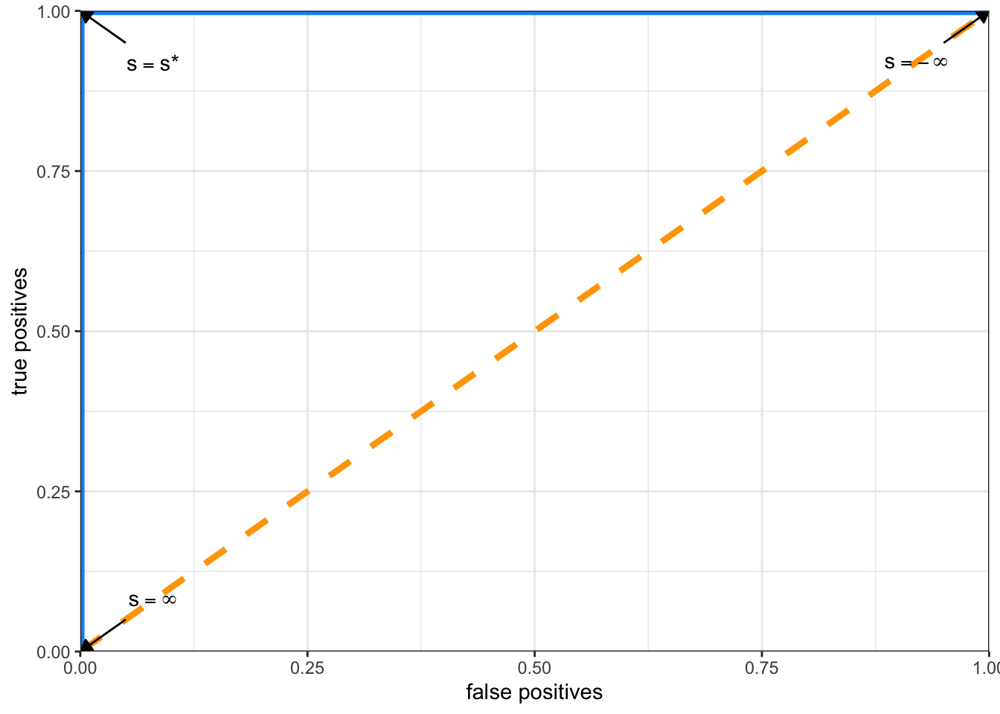
3.37 Scoring
3.37.1 The Receiver Operating Characteristic (ROC) curve
The ROC curves can be summarized to generate numeric criteria such as the AUC (Area Under Curve).
The AUC will be \(1\) for the perfect Score and \(0.5\) for the random Score and can be used to rapidly compare two Scores.
It is considered better than other point-wise criteria.
However we must keep in mind that the AUC as a summary criterion presents some drawbacks since two Scores can have the same AUC but behave very differently in the plane.
3.38 Scoring
3.38.1 The Receiver Operating Characteristic (ROC) curve
In practice, we do not know \(x(s)\) and \(y(s)\) to define the ROC curve.
Usually, a training set will be used to learn a Score \(S\) and a testing set to estimate the ROC curve \(x(s)\) and \(y(s)\) for a range of \(s\).
In the rest of the course/project we will be equally interested in binary classification and scoring which are closely linked.
Throughout the course/project, we will focus on two fundamental and complementary models: the Logistic Regression model and Decision Trees, for which we have shown examples of decision boundaries on the Mixture data set.
Let’s warm up and apply what we have seen on a first data set.
4 Farm holding case study
4.1 Farm holding case study
4.1.1 Financial problems of farm holdings
The article from Desbois (2008) (available here together with a sample data set) shows a complete case study around the detection of financial risks applicable to farm holdings.
Among others, Linear Discriminant Analysis and Logistic Regression (plus stepwise variable selection procedure) are used.
ROC curves are then provided to compare the two methods.
The original data set uses a format specific to the SPSS software, but is readable from R using the foreign package.
The case study by Desbois will be partly reproduced today and in the next lessons to quickly apply scoring techniques.
4.2 Farm holding case study
Loading Desbois data and first glimpse at it:
Code
# package used to import spss file
library(foreign)
don_desbois <- read.spss("../data/presentation_data/Agriculture Farm Lending/desbois.sav", to.data.frame = TRUE) %>% as_tibble()
glimpse(don_desbois)Rows: 1,260
Columns: 30
$ CNTY <fct> Eure, Eure, Eure, Eure, Eure, Eure, Eure, Eure, Eure, Eure, Eu…
$ DIFF <fct> healthy, healthy, healthy, healthy, healthy, healthy, healthy,…
$ STATUS <fct> Entreprise individuelle, Entreprise individuelle, Entreprise i…
$ HECTARE <dbl> 166, 101, 138, 166, 137, 107, 100, 69, 176, 177, 108, 123, 87,…
$ ToF <fct> cereals, cereals, dairy farm, cereals, mixed livestock, cereal…
$ OWNLAND <fct> yes, no, yes, yes, yes, yes, no, yes, yes, yes, yes, yes, yes,…
$ AGE <dbl> 35, 35, 42, 50, 33, 45, 34, 30, 44, 39, 40, 40, 40, 52, 49, 44…
$ HARVEST <fct> 1988, 1988, 1988, 1988, 1988, 1988, 1988, 1988, 1988, 1988, 19…
$ r1 <dbl> 0.449, 0.450, 0.332, 0.363, 0.440, 0.306, 0.717, 0.566, 0.145,…
$ r2 <dbl> 0.622, 0.617, 0.819, 0.733, 0.650, 0.755, 0.320, 0.465, 0.881,…
$ r3 <dbl> 0.25500, 0.24110, 0.55680, 0.35960, 0.31420, 0.26350, 0.16280,…
$ r4 <dbl> 0.11450, 0.10840, 0.18510, 0.13050, 0.13820, 0.08055, 0.11680,…
$ r5 <dbl> 0.334, 0.341, 0.147, 0.232, 0.302, 0.225, 0.601, 0.499, 0.115,…
$ r6 <dbl> 0.785, 0.518, 0.700, 0.773, 0.846, 0.709, 0.894, 0.863, 0.439,…
$ r7 <dbl> 0.585, 0.393, 0.310, 0.495, 0.580, 0.523, 0.748, 0.761, 0.348,…
$ r8 <dbl> 0.20020, 0.12500, 0.38950, 0.27790, 0.26580, 0.18700, 0.14550,…
$ r11 <dbl> 0.6628, 0.7098, 0.4142, 0.4661, 0.7715, 0.8178, 0.6598, 0.6619…
$ r12 <dbl> 1.3698, 1.2534, 0.6370, 1.0698, 1.4752, 1.4682, 1.1018, 1.2360…
$ r14 <dbl> 0.23200, 0.14970, 0.48470, 0.37350, 0.25630, 0.18610, 0.18070,…
$ r17 <dbl> 0.0884, 0.0671, 0.0445, 0.0621, 0.0489, 0.0243, 0.0352, 0.0879…
$ r18 <dbl> 0.0694, 0.0348, 0.0311, 0.0480, 0.0414, 0.0173, 0.0315, 0.0758…
$ r19 <dbl> 0.1660, 0.1360, 0.1030, 0.1080, 0.1270, 0.0652, 0.1290, 0.2400…
$ r21 <dbl> 0.1340, 0.0802, 0.0890, 0.0851, 0.0838, 0.0390, 0.0784, 0.1630…
$ r22 <dbl> 0.3219, 0.3133, 0.2945, 0.1909, 0.2567, 0.1472, 0.3211, 0.5170…
$ r24 <dbl> 0.295, 0.365, 0.166, 0.265, 0.257, 0.191, 0.322, 0.305, 0.180,…
$ r28 <dbl> 0.475, 0.434, 0.350, 0.475, 0.475, 0.443, 0.401, 0.464, 0.475,…
$ r30 <dbl> 0.35000, 0.29780, 0.24680, 0.37590, 0.36690, 0.37590, 0.27240,…
$ r32 <dbl> 0.4313, 0.3989, 0.3187, 0.4313, 0.4313, 0.4257, 0.3697, 0.3886…
$ r36 <dbl> 0.886, 0.351, 1.300, 1.385, 0.886, 1.316, 0.441, 0.761, 2.147,…
$ r37 <dbl> 0.572, 0.867, 0.475, 0.470, 0.520, 0.431, 0.803, 0.656, 0.359,…4.3 Farm holding case study
Replacing for convenience DIFF target by factor Y with O (healthy) or 1 (failing):
Code
don_desbois <- don_desbois %>%
mutate(Y = as.factor(if_else(DIFF=='healthy', 0, 1)), DIFF = NULL,
.before = everything())We give in the following slides the definitions of Desbois ratio \(r_1,...,r_{37}\), that we will use today, as found in the article.
They might give you inspiration to create new predictors/features for the project to come.
4.4 Farm holding case study
4.4.1 Capitalization ratios
- r1 total debt / total assets;
- r2 stockholders’ equity / invested capital;
- r3 short term debt / total debt;
- r4 short term debt / total assets;
- r5 long and medium term debt / total assets;
4.5 Farm holding case study
4.5.1 Weight of the debt ratios
- r6 total debt / gross product;
- r7 long and medium term debt / gross product;
- r8 short term debt / gross product;
4.6 Farm holding case study
4.6.1 Liquidity ratios
- r11 working capital / gross product;
- r12 working capital / (real inputs - financial expenses);
- r14 short term debt / circulating assets;
4.7 Farm holding case study
4.7.1 Debt servicing ratios
- r17 financial expenses / total debt;
- r18 financial expenses / gross product;
- r19 (financial expenses + refunding of long and medium term capital) / gross product;
- r21 financial expenses / EBITDA;
- r22 (financial expenses + refunding of long and medium term capital) / EBITDA;
4.8 Farm holding case study
4.8.1 Capital profitability ratio
- r24 EBITDA / total assets;
4.9 Farm holding case study
4.9.1 Earnings ratios
- r28 EBITDA / gross product;
- r30 available income / gross product;
- r32 (EBITDA - financial expenses) / gross product;
4.10 Farm holding case study
4.10.1 Productive activity ratios
- r36 immobilized assets / gross product;
- r37 gross product / total assets.
4.11 Farm holding case study
4.11.1 Your turn to play
Using the data set at hand, try to retrieve some findings of the Farm holding case study.
You might need R packages FactoMineR, ROCR and MASS::lda function to perform the tasks (“YOUR CODE HERE”) described in the following slides.
Each time I show an example of what is expected.
I suggest that you start using Quarto (setup here) to code and track/publish your results. It will be requested for your projects (it is very similar to RMarkdown). It integrates perfectly with RStudio.
4.12 Farm holding case study
4.12.1 Principal Component Analysis (PCA) of financial ratios
First perform PCA on financial ratios (use for example package FactoMineR), then display correlations between ratios and the two first principal components :
Code
########## YOUR CODE HERE #####################Code
# More details here http://factominer.free.fr/factomethods/principal-components-analysis.html
res.pca = FactoMineR::PCA(don_desbois,
scale.unit = TRUE,
quanti.sup = c(4, 7), # HECTARE / AGE excluded from Desbois analysis
quali.sup = c(1, 2, 3, 5, 6, 8),
ncp = 5,
graph=FALSE)
plot(res.pca, choix = "var")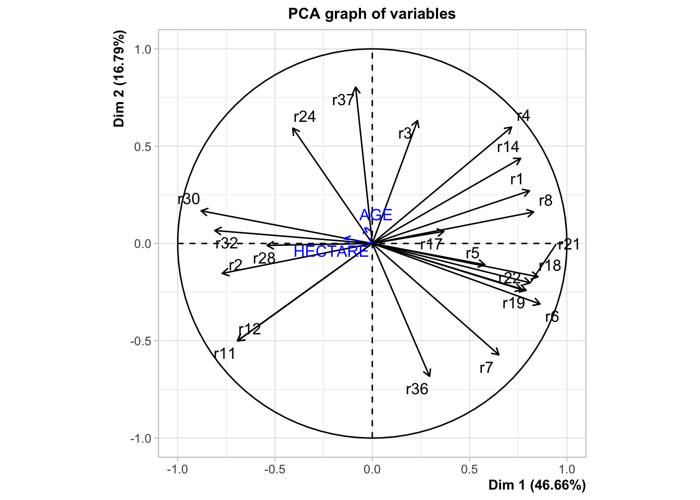
Code
# FactoMineR::dimdesc(res.pca, axes=c(1,2))4.13 Farm holding case study
4.13.1 To be compared with article Figure 1

4.14 Farm holding case study
Code
########## YOUR CODE HERE #####################Following Desbois path, visualize the farm holdings in data set as a bivariate plot on the first two components of PCA (based on financial ratios), use variable Y (0=”healthy”; 1=”failing”) to colour your observations:
Code
# Similar to Desbois Fig 2.
# Plot of the farm holdings in the first factorial plane of the normalized PCA based on financial ratios
# with illustrative variable Y (0=”healthy”; 1=”failing”)
FactoMineR::plot.PCA(res.pca, axes=c(1, 2), choix="ind", habillage=1, invisible = c("quali"))
Code
# FactoMineR::plot.PCA(res.pca, axes=c(1, 2), choix="ind", habillage=1, invisible = c("ind"))4.15 Farm holding case study
4.15.1 To be compared with article Figure 2
It strikes Desbois that the PCA (even if not a discriminative/scoring procedure), seems to do a rather good job identifying defaulting farms on the training set.
Disclaimer: in general it won’t be necessarily the case as PCA operates only on the predictors without “knowledge” of target variable.

4.16 Farm holding case study
As suggested by Desbois, extract the first principal component (some help here), and use it as a Scoring function.
Today it will allow us to use a first Scoring function without introducing the Logistic Regression that you have not yet studied in class.
Code
########## YOUR CODE HERE #####################Code
# https://stats.stackexchange.com/questions/460787/pcr-after-pca-with-mixed-data-how-to-extract-export-the-pcs-as-new-variables-i
# https://stats.stackexchange.com/questions/494866/how-to-explain-the-numerical-discrepancy-between-factominerpca-and-the-svd
# https://stats.stackexchange.com/questions/134282/relationship-between-svd-and-pca-how-to-use-svd-to-perform-pca
# Extracting first five Principal components from FactomineR object
# Using FactomineR 'notation' (U,sv,V)
# (X nxp matrix of Desbois observations (only r1...r37), SVD decomposition X = U %*% diag(vs) %*% t(V),
# where U: unitary matrix of left-singular vectors, vs: singular values, V: unitary matrix of left-singular vectors)
# SVD object from FactomineR res.pca$svd
# Principal components X %*% V = U %*% diag(vs) %*% t(V) %*% V = U %*% diag(vs)
principal_components_1 <- res.pca$svd$U %*% diag(res.pca$svd$vs[1:5])
# Can also be directly extracted from:
principal_components_2 <- res.pca$ind$coord
# Or using PC = X %*% V (where X has been centered and scaled
# base R 'scale' uses a different scaling factor than FactomineR hence sqrt(n / n-1) correction)
X_for_PCA <- don_desbois %>% select(r1:r37) %>% as.matrix()
principal_components_3 <- sqrt(nrow(X_for_PCA) / (nrow(X_for_PCA) - 1)) * scale(X_for_PCA) %*% res.pca$svd$VBelow the score for each observation is the x-axis or first principal component:
Code
naive_score <- bind_cols(don_desbois, as_tibble(principal_components_2))
ggplot(naive_score) +
geom_point(aes(x = Dim.1, y = Dim.2, col = Y)) +
scale_colour_manual(values = c("dodgerblue", "orange"))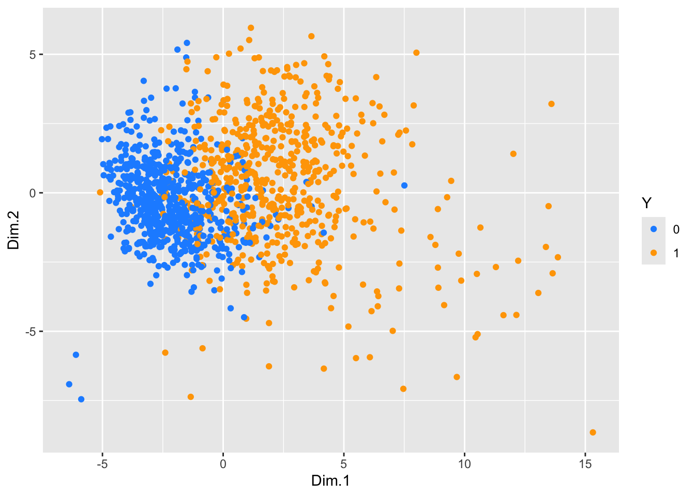
4.17 Farm holding case study
Looking at this plot Desbois concludes that a simple classifier can be devised using the first PCA coordinate (setting a threshold at \(PC_1 > 0.02\)):

4.18 Farm holding case study
Going further than Desbois and for illustrative purposes only, use \(PC_1\) as a very naive Scoring function.
Plot below the ROC curve as defined in the Scoring part of the presentation (you can use package ROCR, but a simple for-loop for different cutoff values \(s\) will do the job):
Code
########## YOUR CODE HERE #####################Code
library("ROCR")
# naive score
pred <- prediction(naive_score$Dim.1, naive_score$Y)
perf <- performance(pred, measure = "tpr", x.measure = "fpr")
plot(perf, main="ROC curve", xlab="Specificity",
ylab="Sensitivity", col = "darkorange",
print.cutoffs.at = c(-2.5,-1,0.00,1,5),
cutoff.label.function = function(x) {paste0(" s = ",round(x,2))})
abline(0, 1) #add a 45 degree line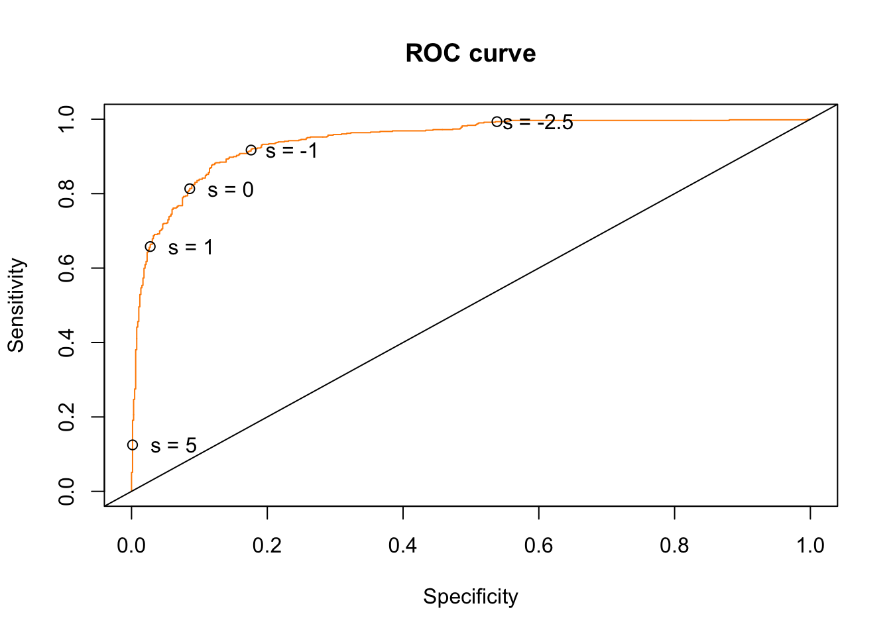
We follow closely the case study, but we will see that ROC curves are usually evaluated on a hold-out data set.
4.19 Farm holding case study
Then compare with a Scoring function obtained with Linear Discriminant Analysis (LDA). For a reminder on LDA see for example Hastie et al. (2009, Chapter 4.3 LDA, p. 103-111).
You can use Desbois variables selected in the article by a stepwise procedure (using Wilk’s lambda5). Selected variables are:

So basically you can fit LDA with r2+r3+r7+r14+r17+r18+r21+r32+r36 as predictors (I use R formula notation to ease your copy-paste).
4.20 Farm holding case study
Fit LDA (MASS::lda) with model specification of your choice. Then display model coefficients:
Code
########## YOUR CODE HERE #####################Using r2+r3+r7+r14+r17+r18+r21+r32+r36, we obtain:
Code
lda_desbois <- MASS::lda(Y~r2+r3+r7+r14+r17+r18+r21+r32+r36, data=don_desbois)
round(lda_desbois$scaling,3) LD1
r2 -2.542
r3 2.398
r7 1.099
r14 0.604
r17 18.702
r18 -6.798
r21 -0.622
r32 -4.163
r36 0.192Similar6 to what Desbois obtains:

4.21 Farm holding case study
Now compare the LDA Scoring function with the naive Score built with first component of PCA using a ROC curve (on training set):
Code
########## YOUR CODE HERE #####################Code
# for ROCR
labels_desbois <- don_desbois$Y
# naive score
predictions_naive_score <- naive_score$Dim.1
naive_score_group <- naive_score %>%
group_by(Y) %>%
summarize(mean_score = mean(Dim.1), n = n())
cutoff_naive <- mean(naive_score_group$mean_score)
pred <- prediction(predictions_naive_score, labels_desbois)
perf <- performance(pred, measure = "tpr", x.measure = "fpr")
plot(perf, main="ROC curve Admissions", xlab="Specificity",
ylab="Sensitivity", col = "darkolivegreen",
print.cutoffs.at = c(cutoff_naive),
cutoff.label.function = function(x) {paste0(" s = ",round(x,2))})
abline(0, 1) #add a 45 degree line
# lda
predictions_lda <- predict(lda_desbois)$x
lda_score_group <- bind_cols(don_desbois, predictions_lda) %>%
group_by(Y) %>%
summarize(mean_score = mean(LD1), n = n())
cutoff_lda <- mean(lda_score_group$mean_score)
pred <- prediction(predictions_lda, labels_desbois)
perf <- performance(pred, measure = "tpr", x.measure = "fpr")
plot(perf, add = TRUE, main="ROC curve Admissions", xlab="Specificity",
ylab="Sensitivity", col = "plum4",
print.cutoffs.at = c(cutoff_lda),
cutoff.label.function = function(x) {paste0(" s = ",round(x,2))})
legend(0.6,0.6,
c('naive - PCA', 'LDA'),
col=c("darkolivegreen", "plum4"),lwd=3)
4.22 Farm holding case study
As a very soft and intuitive introduction to logistic regression. First discretize a ratio \(r\) of your choice.
- Compute proportion of defaults among each class. For example using \(0.01\) steps for ratio \(r17\):
Code
########## YOUR CODE HERE #####################Code
class_width <- 0.01
don_desbois_binned <- don_desbois %>%
mutate(r17_bins = cut(r17, breaks = seq(0, 0.2, class_width),
right = FALSE, dig.lab = 4, include.lowest = TRUE),
min = floor(r17 / class_width) * class_width,
max = if_else(r17 == 0 , 1,
# customers with 0$ balance should belong to [0, width) class
# or be excluded
ceiling(r17 / class_width)) * class_width,
max = if_else(min==max, (ceiling(r17 / class_width) + 1) * class_width, max)) %>%
group_by(r17_bins, min, max, Y) %>%
summarize(n=n()) %>%
ungroup() %>%
pivot_wider(names_from = Y, values_from = n) %>%
replace_na(list(`0` = 0, `1` = 0)) %>%
mutate(`Mean(Y)` = round(`1` / (`1` + `0`), 4))
cat(simplermarkdown::md_table(don_desbois_binned %>% select(r17_class=r17_bins, `0`, `1`,`Mean(Y)` )))|r17_class |0 |1 |Mean(Y)|
|-----------|---|--|-------|
|[0,0.01) | 2| 0|0.0000 |
|[0.01,0.02)| 4| 2|0.3333 |
|[0.02,0.03)| 65|14|0.1772 |
|[0.03,0.04)|106|38|0.2639 |
|[0.04,0.05)|112|64|0.3636 |
|[0.05,0.06)|104|77|0.4254 |
|[0.06,0.07)| 88|93|0.5138 |
|[0.07,0.08)| 63|83|0.5685 |
|[0.08,0.09)| 49|66|0.5739 |
|[0.09,0.1) | 27|71|0.7245 |
|[0.1,0.11) | 14|42|0.7500 |
|[0.11,0.12)| 12|42|0.7778 |
|[0.12,0.13)| 7|14|0.6667 |
|[0.19,0.2] | 0| 1|1.0000 |- Then using this table, plot an empirical conditional distribution of default given \(r\) classes:
Code
########## YOUR CODE HERE #####################Code
(default_occurrence <-
ggplot(don_desbois %>% mutate(Y = if_else(Y == "1", 1, 0)), aes(x=r17, y=Y)) +
geom_jitter(alpha=0.2, height=0.1) +
geom_segment(data = don_desbois_binned,
aes(x = min, xend = max, y = `Mean(Y)`, yend = `Mean(Y)`),
color = 'coral',
linewidth=1.25)) +
scale_y_continuous(breaks = c(0, 1))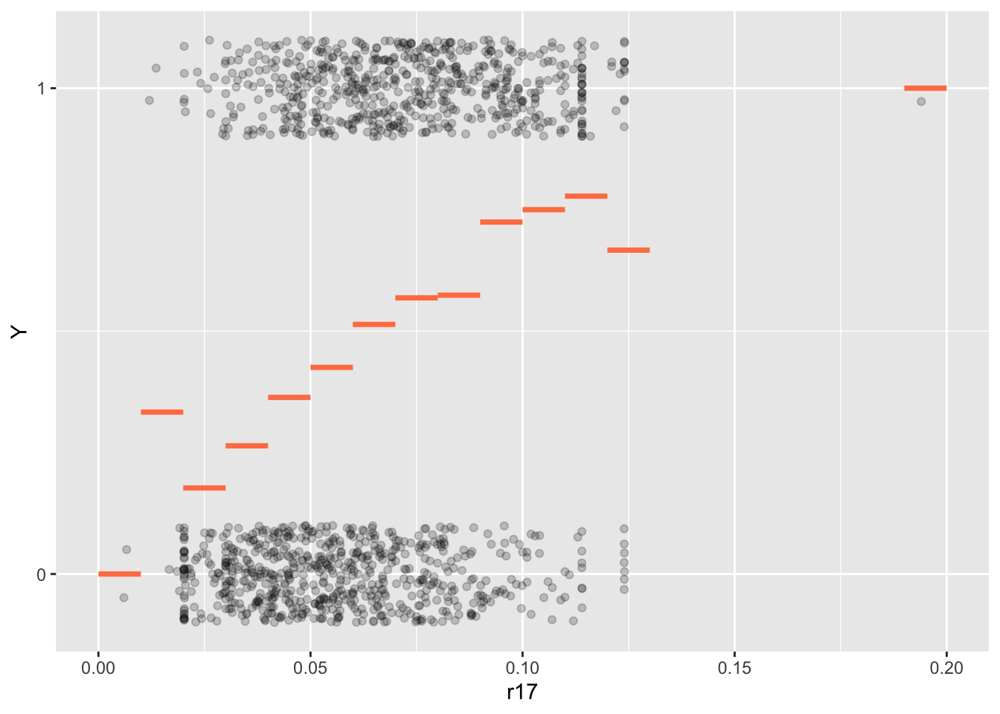
4.23 Farm holding case study
Code
(default_occurrence <-
ggplot(don_desbois %>% mutate(Y = if_else(Y == "1", 1, 0)), aes(x=r17, y=Y)) +
geom_jitter(alpha=0.2, height=0.1) +
geom_smooth(method = "glm",
formula = y ~ x,
method.args = list(family = "binomial"),
se = FALSE,
col = "dodgerblue",
linetype = "dotted") +
geom_segment(data = don_desbois_binned,
aes(x = min, xend = max, y = `Mean(Y)`, yend = `Mean(Y)`),
color = 'coral',
linewidth=1.25)) +
scale_y_continuous(breaks = c(0, 1))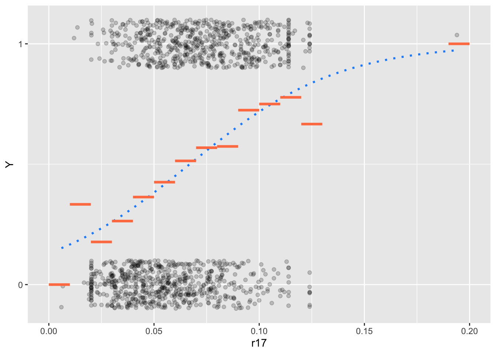
We notice that the mean default occurrence with respect to \(r_{17}\) classes follows a kind of “S”-shaped curve or sigmoid function. Note that the shape depends on classes width and might change. We “fitted” (blue-dotted) \(\sigma: x \to\sigma(x)=\frac{e^{x}} { 1 + e^{x} }\) also known as logistic function to the mean default occurences (orange segments).
4.24 Farm holding case study
This roughly corresponds to the intuitive introduction to the logistic regression model given in Hosmer et al. (2013) using a Coronary Heart Disease (CHD) event as \(Y\) and AGE as \(X\):


4.25 References
Footnotes
In statistics, inputs are often called the predictors, factors or the independent variables. In machine learning the term features is also used.↩︎
The outputs are also called responses, labels or dependent variables.↩︎
It is sometimes designed as oracle in the literature.↩︎
See Sébastien Gadat - TSE - Maths of Deep and Machine Learning course here. Other very good references are Philippe Rigollet - MIT - 18.657: Mathematics of Machine Learning here or Erwan Le Pennec - Polytechnique - Introduction to Machine Learning (M2 MSV) slides here. We will see in another course that in the context of the Logistic Regression the two approaches are strongly linked: it can be seen as a probabilistic|discriminative approach or an optimization approach.↩︎
We won’t describe the procedure here. A SPSS script is given in the article. It is not straightforward to reproduce it with R. I tried scripting manually the procedure and it works but is not very interesting.↩︎
Rdoes not provide constant for LDA which won’t affect Scoring function ordering.↩︎